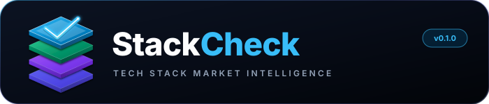

Automated job scraper, section-aware skill extraction engine, and interactive analytics dashboard.
curl -fsSL https://raw.githubusercontent.com/haydermuhib/StackCheck/main/install.sh | bash
💡 Or download the standalone executable: StackCheck-windows-x64.exe. If SmartScreen appears, click More info → Run anyway.
A structured technical overview of the system design, ingestion filters, and analysis algorithms:
Most job scrapers run basic regex or substring matching. They treat the letter "R" inside the word "for" as a data science skill, count every mention equally, and miss whether a skill was a strict requirement or a secondary preference.
| Evaluation Factor | Naive Scrapers | StackCheck Intelligence |
|---|---|---|
| Extraction Accuracy | Flat keyword counts with false positives | Word-boundary detection with canonical skill aliases |
| Requirement Weight | Counts every bullet point identically | Separates requirements from responsibilities with positional multipliers |
| Duplicate Handling | Duplicates skew percentages | Deterministic fingerprinting across titles, companies, and locations |
| Salary Benchmarks | Raw numbers distorted by 1-sample outliers | Statistical Min/Avg/Max error bars with sample validation (N ≥ 3) |
| Server Footprint | Heavy multi-tab scraping that hammers origin servers | Polite batch SSR harvesting (98% request reduction) + zero-re-scrape local SQLite compute |
| Direct Employer Links | Generic search redirects | Preserves direct employer application URLs in table columns and cards |
StackCheck runs as a modular, local-first system. Data flows from ingestion through normalization and statistical aggregation, feeding both the browser dashboard and scriptable CLI exports.
All scraped data and project workspaces are stored in a local SQLite file (~/.stackcheck/stackcheck.db). No cloud accounts or telemetry required.
Charts use explicit fig, ax object-oriented interfaces, avoiding thread-safety issues common to global pyplot states in multi-threaded dashboards.
Components inside src/stackcheck/:
client/hiringcafe.py: Direct payload requests with pagination, workplace filters, and exponential backoff retry.client/normalizer.py: Title classification, geographic country aliases, and duplicate fingerprinting.analyzer/rule_extractor.py: Positional regex extractor separating requirements from general description text.analyzer/metrics.py: Skill co-occurrence correlation matrix, salary percentiles, and weighted scoring.storage/repository.py: Multi-workspace SQLite repository handling schema migration and upserts.web/app.py: 3-tab Streamlit interface with multi-select filtering and CSV/JSON/Markdown exports.Real-world job boards contain spam postings, duplicate reposts across regional offices, and messy location inputs. StackCheck applies a 4-stage cleaning pipeline before storing data.
Intercepts Next.js __NEXT_DATA__ payloads to ingest 60–90 structured jobs per single request. Gathering 2,000 postings takes ~25–30 requests instead of 2,000 separate page hits.
Sequential requests with courtesy pauses (time.sleep(0.35)) and persistent HTTP/2 connection. Traffic volume is identical to a single human scrolling a feed—zero DDoS or server load.
Data stores directly in local SQLite (stackcheck.db). All NLP skill extraction, salary recalculations, and chart renders run 100% offline on your CPU with zero recurring network requests.
Tokenized role validation rejects unrelated roles (e.g. SRE/DevOps mentioning "data"), while SHA-256 fingerprinting and canonical country mapping eliminate duplicates and spam.
Skills mentioned in the "What We Look For" section matter significantly more than technologies casually listed under "Company Overview" or "Nice-to-Have".
| Job Section | Base Multiplier | Positional Decay | Example Insight |
|---|---|---|---|
| Requirements / Qualifications | 1.5x |
1.8x at top bullet down to 1.0x at bottom | Core language (e.g. Python) listed as item #1 gets peak priority score |
| Responsibilities / Day-to-Day | 1.0x |
1.2x at top bullet down to 1.0x at bottom | Tools used during workflow (e.g. Jira, Slack) get standard priority |
| Nice-to-Have / Preferred | 0.7x |
Fixed flat multiplier | Secondary tools do not distort primary core language counts |
For any pair of technologies (A and B), the co-occurrence frequency measures how often both appear together within the same job advertisement:
Co-Occurrence Score = Count(Job containing A and B) / Total Analyzed Postings
This reveals practical tech stack combinations, such as the strong affinity between PostgreSQL + FastAPI, or dbt + Snowflake + SQL.
The user interface organizes research data into three focused tabs:
Top demanded skills bar chart comparing raw market frequency against weighted requirement scores (1.8x), accompanied by domain breakdown and workplace distributions.
Seaborn correlation heatmaps revealing tool synergies (e.g. Python + SQL, dbt + Snowflake) and country compensation scatter plots.
Min/Avg/Max error bar plots protected by sample size thresholds (N ≥ 3) to eliminate 1-sample outliers, sample count tags (n=X), and Remote Pay Premium KPIs.
Filterable table supporting multi-select filters for Experience Level, Country, and Skills (ANY or ALL match mode) with direct employer apply links and CSV/JSON export.
StackCheck is packaged as a portable, self-contained application (like Ventoy or Rufus). It runs without requiring system modifications, external Python installations, or administrator access.
| Command | Action |
|---|---|
stackcheck |
Launch local browser dashboard at http://localhost:8501 (auto-focuses if already open) |
stackcheck status |
Check if local dashboard server is currently active and listening |
stackcheck stop |
Safely shut down background server process and release port |
stackcheck search "Data Analyst" --location Pakistan |
Scrape live job postings and store in active SQLite workspace |
stackcheck export --format all |
Export an executive summary brief to local markdown, CSV, and JSON |
stackcheck update |
Check GitHub Releases API and upgrade binary in place with visual progress |
git clone https://github.com/haydermuhib/StackCheck.git cd StackCheck python3 -m venv .venv source .venv/bin/activate pip install -e . python build_app.py --onefile